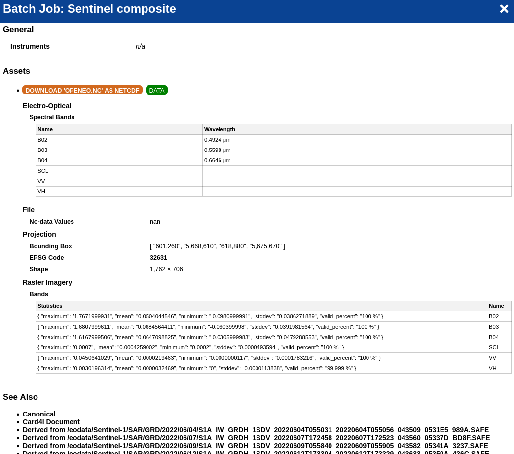
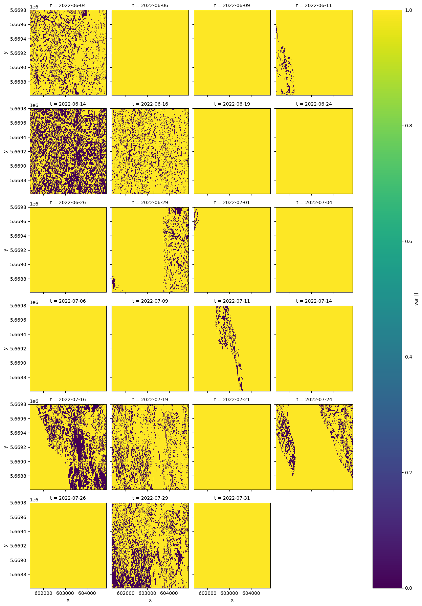
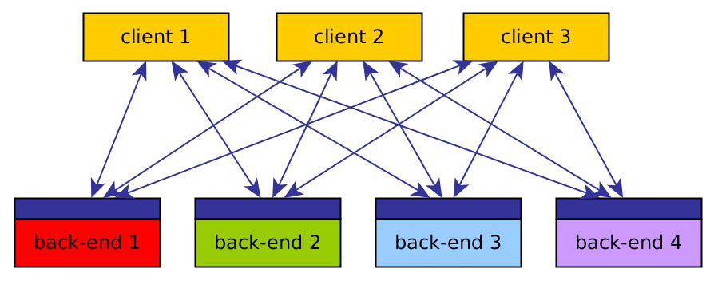
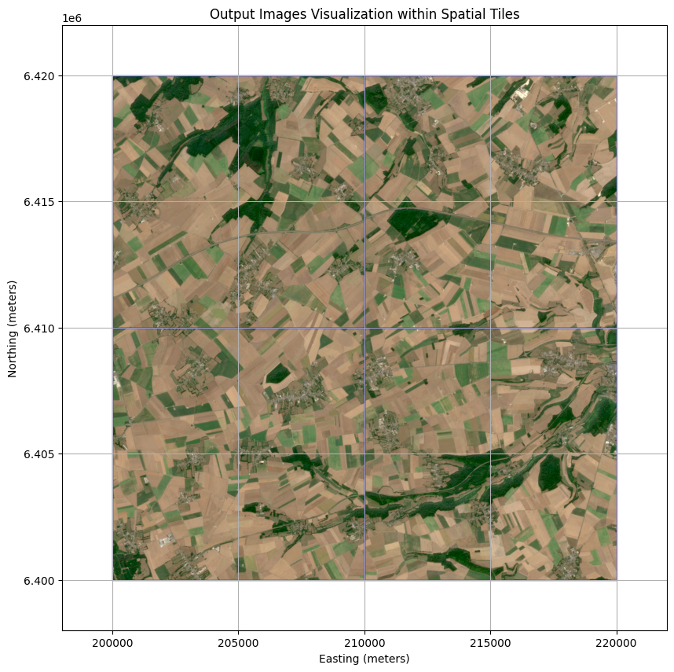
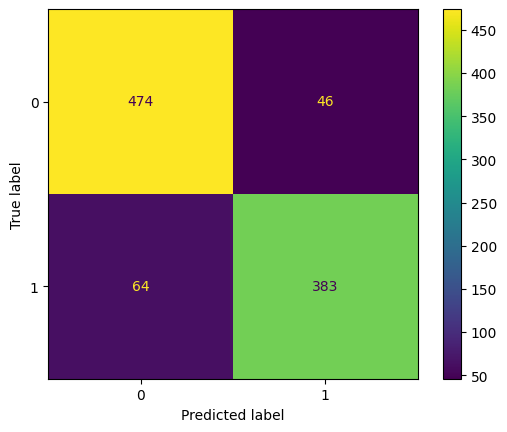

Open-EO Standard
for Earth Observation Analysis
The openEO API allows users to connect to Earth observation cloud back-ends in a simple and unified way.
One API.
Any cloud. Any language.
Whether you're using Python, R , JavaScript or Julia - openEO lets you write your analysis once and run it on any compatible back-end. No vendor lock-in. No rewriting code.
openEO is not to be confused with independant services that implement the specifications such as CDSE. For a list of services built on top of openEO, please visit the openEO Hub.
Are you interested in…
openEO can be used to process and analyze Earth observation data from diverse sources in a unified and efficient manner.
Quickly build true-color composites from Sentinel-2 and export clean visuals for maps, reports, and monitoring dashboards.

True-color Sentinel-2 composite output.
Best for: EO quicklooks, change communication, report-ready imagery
Data used: Sentinel-2 L2A
Outcome: RGB composite image
Combine spectral bands to derive vegetation and environmental indicators with reusable, cloud-executed openEO pipelines.

Spectral index style output from band combinations.
Best for: index workflows and environmental monitoring
Data used: Sentinel-2 L2A
Outcome: EVI Geotiff image
Inject your domain logic with UDFs to extend standard processes while keeping your workflow portable across back-ends.

Workflow extension pattern for custom UDF logic.
Best for: custom algorithms and domain-specific logic
Data used: Sentinel-2 L2A
Outcome: custom UDF process
Package your workflow as a user-defined process so teams can execute the same analysis at scale with one endpoint.

API-oriented publishing view for reusable services.
Best for: operational teams and repeatable workflows
Data used: Sentinel-2 L2A Outcome: reusable UDP service
Orchestrate many jobs over large regions and time ranges while preserving reproducibility and runtime efficiency.

Batch processing view for multi-job execution.
Best for: regional to continental scale analysis
Data used: Sentinel-2 L2A Outcome: batch job results and summaries
Train and apply machine-learning classifiers directly in your EO workflow to create reproducible land-cover intelligence.

Model training output with classification-ready features.
Best for: classification and model-driven EO analysis
Data used: Sentinel-2 L2A and Sentinel-1 GRD Outcome: trained model and inference maps
Choose your path
New to openEO? Start with a guide for your preferred language or tool.
Explore the openEO Hub
Find an openEO service and start working with Earth observation data.
Concepts & Glossary
Understand datacubes, processes, UDFs, and the openEO data model before writing any code.
Cookbook
Get started with practical examples and step-by-step guides to use openEO effectively for a specific usecase.
Built-in openEO Processes
Learn how to use different openEO processes to analyze Earth observation data efficiently using either 🐍 Python, 📊 R or ⚡ JavaScript clients.
QGIS Plugin
Access openEO back-ends directly from QGIS with a graphical interface to visualize openEO outputs.
For Developers
Build a back-end or client library. API reference, profiles, and implementation guidelines.
What’s new
| Date | Title | Author |
|---|---|---|
| May 14, 2026 | OGC publishes openEO as a new Community Standard | |
| Feb 3, 2026 | openEO API 1.3.0 and openEO Processes 2.0.0 RC2 released | |
| Dec 22, 2025 | New openEO QGIS plugin has been released |